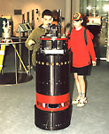
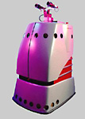
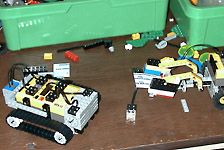

1997 wurde der Roboter RHINO als Touristenführer im Deutschen Museum Bonn eingesetzt, 1998 MINERVA im Smithsonian Nationalmuseum für amerikanische Geschichte. Beide wurden an der Universität Bonn entwickelt. Neben den Führungen konnte man die Roboter über das Internet steuern, und ihre Handlungen zu beobachten. Roboter-Spielzeug wie "Lego Mindstorms" od. "Furby" kommen auf den Markt und erfreuen sich großer Popularität. Der IBM-Rechner "Deep Blue" besiegt Gary Kasparov im Schach. Nasas "Pathfinder" landet auf dem Mars und sendet den Roboter-Rover "Sojourner" auf die Marsoberfläche, der ferngesteuert herumfährt und Experimente durchführt.